LabVIEW VI Comparison Report
7/13/2026 7:49:36 PM
First VI: C:\workspace-base\Theme\Reset Theme.viSecond VI: C:\workspace\Theme\Reset Theme.vi
| Front Panel Overview | ||
|
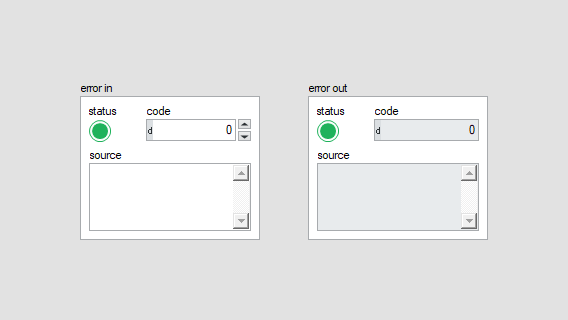 |

| |
| Block Diagram Overview | ||
|
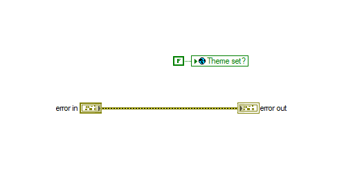 |
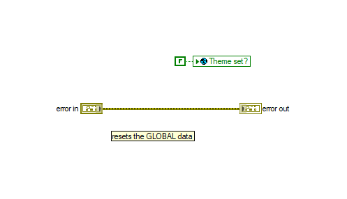 |
- Front Panel
- Front Panel Position/Size
- Block Diagram Functional
- Block Diagram Cosmetic
- VI Attribute
Detailed Information
1. Block Diagram objects
| C:\workspace-base\Theme\Reset Theme.vi | C:\workspace\Theme\Reset Theme.vi | |
|
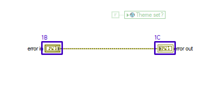 |
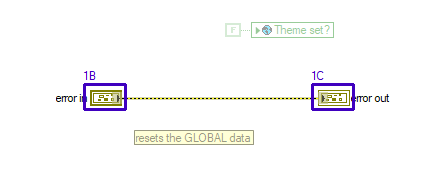 |
- Name Label - text justification
- Front Panel Terminal "error in" - moved : changed from "(182,265)" to "(51,79)"
- Front Panel Terminal "error out" - moved : changed from "(410,265)" to "(279,79)"
2. Block Diagram objects
| C:\workspace-base\Theme\Reset Theme.vi | C:\workspace\Theme\Reset Theme.vi | |
|
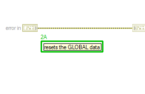 |
- Label - added at (95,119)
3. Block Diagram objects
| C:\workspace-base\Theme\Reset Theme.vi | C:\workspace\Theme\Reset Theme.vi | |

|
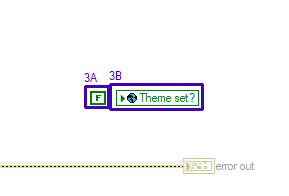 |
- Boolean Constant "Theme set?" - moved : changed from "(317,198)" to "(186,12)"
- Global Variable "Pop-Up.lvlib:Popup.lvclass:PopUp Theme Global.vi" - moved : changed from "(343,197)" to "(212,11)"
4. Front Panel - Panel
| C:\workspace-base\Theme\Reset Theme.vi | C:\workspace\Theme\Reset Theme.vi | |
|
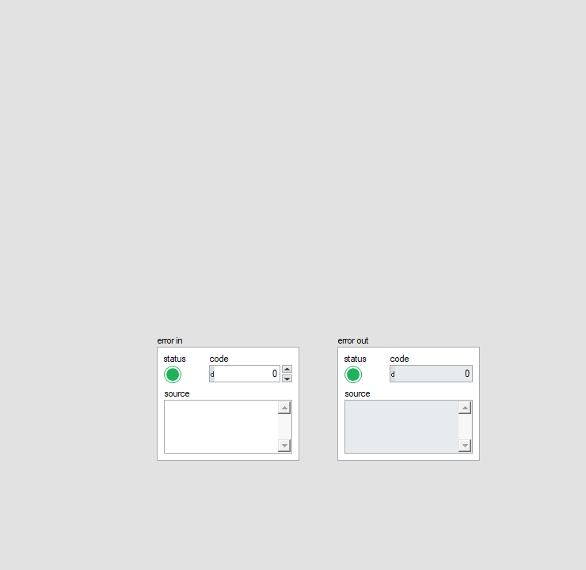 |
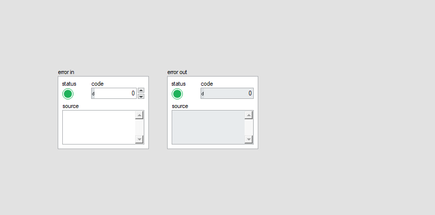 |
- Panel - panel size
5. Front Panel - Cluster
| C:\workspace-base\Theme\Reset Theme.vi | C:\workspace\Theme\Reset Theme.vi | |
|
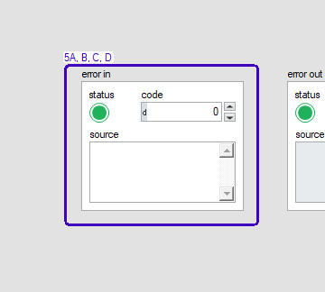 |
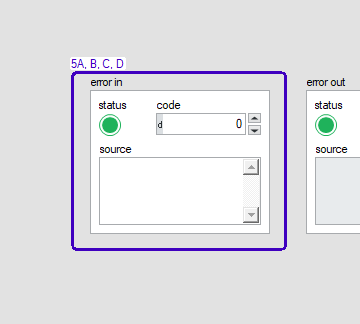 |
- Boolean "status" - moved : changed from "(10,28)" to "(10,28)"
- String "source" - moved : changed from "(11,72)" to "(11,72)"
- Cluster "error in" - moved : changed from "(108,348)" to "(24,60)"
- Numeric "code" - moved : changed from "(68,28)" to "(68,28)"
6. Front Panel - Cluster
| C:\workspace-base\Theme\Reset Theme.vi | C:\workspace\Theme\Reset Theme.vi | |
|
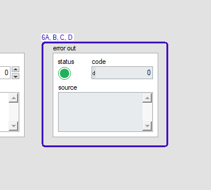 |
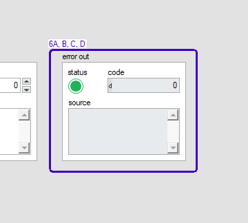 |
- Boolean "status" - moved : changed from "(10,28)" to "(10,28)"
- String "source" - moved : changed from "(11,72)" to "(11,72)"
- Numeric "code" - moved : changed from "(68,28)" to "(68,28)"
- Cluster "error out" - moved : changed from "(336,348)" to "(240,60)"
7. VI Attribute - Documentation (VI Properties)
- description text : changed from "Reset the global theme for the application - this unloads the global theme that will be used and uses the default theme or input from a VI Code Developed By: Technology Service Corporation 1983 S Liberty Drive Bloomington, IN 47403 Phone: 812 558-7100 www.tsc.com/atcs Developer: Daniel Coons" to "Reset the global theme for the application - this unloads the global theme that will be used and uses the default theme or input from a VI Code Developed By: + Daniel Coons + https://github.com/danielcoons/tsc-pop-up"
8. VI Attribute - Execution (VI Properties)
- Allow Debugging : changed from "enabled" to "disabled"